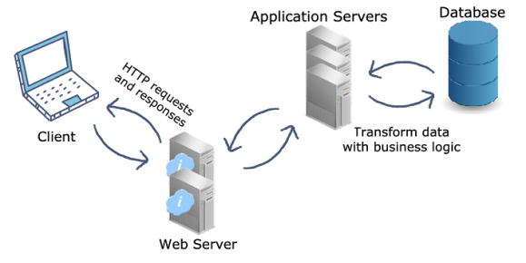

Tema 3: Servidores de aplicaciones
Introducción
Un servidor de aplicaciones es un marco mixto de software que permite tanto la creación de aplicaciones web como un entorno de servidor para ejecutarlas.
A menudo puede ser una pila compleja de diferentes elementos computacionales que ejecutan tareas específicas que necesitan trabajar como uno solo para alimentar múltiples nubes y software y aplicaciones basadas en la web.
Situado entre el servidor web y el nivel de back-end del servidor de bases de datos, el servidor de aplicaciones es esencialmente un intermediario para el servidor de bases de datos y los usuarios de las aplicaciones empresariales o de consumo que soporta mediante el uso de varios protocolos e interfaces de programación de aplicaciones (API).
Dependiendo de lo que se instale, un servidor de aplicaciones puede clasificarse de varias maneras, como servidor web, servidor de aplicaciones de base de datos, servidor de aplicaciones de propósito general o servidor de aplicaciones empresariales.
Es habitual que se utilice junto con un servidor web o que contenga un servidor web, por lo que ambos pueden converger y denominarse servidor de aplicaciones web. También es lo suficientemente versátil como para ser utilizado con otros servidores de aplicaciones simultáneamente.
Los servidores de aplicaciones también pueden contener sus propias interfaces gráficas de usuario para su gestión a través de PC, pero también pueden ocuparse de sus propios recursos, así como del procesamiento de transacciones, la mensajería, la agrupación de recursos y conexiones, y la realización de tareas de seguridad.
¿Qué pasa con Java?
Para los requisitos de gama alta, los servidores de aplicaciones suelen contar con supervisión de alta disponibilidad, agrupación en clústeres, equilibrio de carga, redundancia integrada y servicios de aplicaciones distribuidas de alto rendimiento, así como soporte para el acceso a bases de datos complicadas.
Entre las plataformas de servidores de aplicaciones más populares están J2EE, WebLogic, Glassfish, JBoss Enterprise Application Platform, Apache Tomcat y Apache Geronimo, por nombrar sólo algunas.
¿Por qué utilizar un servidor de aplicaciones? ¿Cuáles son las ventajas?
Los servidores de aplicaciones se utilizan mejor cuando es necesario integrarse con bases de datos y servidores, por ejemplo, servidores web, que ya han sido creados y forman parte de la infraestructura informática existente de una organización.
Una de las razones principales es que un servidor de aplicaciones puede servir como medio para proporcionar integridad al código y a los datos, al tener un enfoque integrado y centralizado para mantener las aplicaciones actualizadas. No tener uno puede llevar a diferentes versiones de la misma aplicación en toda la empresa, lo que a su vez podría traer consigo problemas de compatibilidad de software.
Otra razón fundamental para utilizar un servidor de aplicaciones es que proporciona a la empresa una capa adicional de seguridad. Al situarse entre las páginas web y las bases de datos, un servidor de aplicaciones ayuda a actuar como una barrera adicional contra los ciberataques de inyección SQL, ya que no hay un vínculo directo entre una página web y una base de datos. Esta separación conlleva la necesidad de validación y/o la exigencia de mostrar la lógica de negocio, garantizando así que el texto introducido en un formulario en un sitio web no sea explotado como una llamada SQL maliciosa.
La seguridad se ve reforzada por el establecimiento de procesos de autenticación centralizados y la gestión del acceso a los datos.
El rendimiento de las aplicaciones de uso intensivo y de gran tamaño también puede ser impulsado por un servidor de aplicaciones, ya que se puede establecer un mayor control sobre el tráfico de la red.
Y la capacidad de trabajar a escala es otro factor importante a la hora de considerar el uso de un servidor de aplicaciones, ya que su capacidad de agrupar conexiones a bases de datos significa que puede ampliarse para actuar como una granja de servidores web sin necesidad de añadir conexiones adicionales a las bases de datos subyacentes.
¿En qué se diferencia de otros tipos de servidores?
Aunque un servidor de aplicaciones y un servidor web puedan parecer similares a primera vista, en realidad son bastante diferentes. El primero se diferencia del segundo en que se ocupa de servir la lógica de negocio a las aplicaciones a través de un conjunto de protocolos. Un servidor web, en cambio, trabaja con peticiones HTTP, respondiendo y gestionándolas para llevar a cabo las funciones del sitio web, además de alojar dicho sitio web, almacenando su contenido estático, como imágenes, JavaScript, CSS y páginas HTML.
En circunstancias comunes, un servidor web puede no soportar transacciones o agrupación de conexiones a bases de datos, pero puede tener características de tolerancia a fallos y escalabilidad, incluyendo caché, clustering y balanceo de carga.
A su vez, un servidor web es diferente de un servidor de base de datos, ya que este último realiza tareas como el almacenamiento de datos, la manipulación y el análisis de datos, y el archivo, entre otras tareas relacionadas con la gestión de datos. Estos servidores de bases de datos utilizan un sinfín de protocolos, como ODBC o JDBC, por nombrar algunos. Los servidores de bases de datos, como es lógico, alojan bases de datos como Oracle, SQL Server, MySQL, etc.
Cabe destacar que las funciones de estos servidores a menudo pueden agruparse para ofrecer una pila de servidores, con el fin de proporcionar efectivamente los subsistemas para apoyar, por ejemplo, un conjunto de software o componentes necesarios para crear una plataforma de servicios.
Servidor de aplicaciones II
as aplicaciones vienen en todas las formas, tamaños y casos de uso. En un mundo en el que dependemos de una serie de procesos empresariales críticos, los servidores de aplicaciones son los ordenadores de gran potencia que proporcionan recursos de aplicaciones a los usuarios y clientes web.
Los servidores de aplicaciones se sitúan física o virtualmente entre los servidores de bases de datos que almacenan los datos de las aplicaciones y los servidores web que se comunican con los clientes. Los servidores de aplicaciones y el middleware afín son los sistemas operativos que soportan el desarrollo y la entrega de una aplicación. Ya sea una aplicación de escritorio, móvil o web, los servidores de aplicaciones desempeñan un papel fundamental en la conexión de un mundo de dispositivos.
Examinamos cómo los servidores de aplicaciones encajan en la arquitectura de servicios de una red, cómo los servidores de aplicaciones soportan los servidores web, las aplicaciones nativas y las aplicaciones móviles, y el estado actual de los servidores de aplicaciones en la década de 2020.
Terminología de los servidores de aplicaciones
| Término | Descripción |
|---|---|
| Servidor web | Responsable de almacenar, procesar y entregar los datos de E/S de las páginas web |
| Cliente web | Punto final que intenta acceder a los recursos de la web o de la aplicación |
| HTTPS | Protocolo de comunicación entre el servidor web y los clientes web |
| Servlet/JSON | Lenguaje para el intercambio entre los servidores web y de aplicaciones |
| Lógica de negocio | Reglas para el almacenamiento de datos y la transferencia de recursos de la aplicación |
| Aplicación | Un programa de software o un sitio web unido a una base de datos |
El papel del servidor de aplicaciones en la arquitectura de servicios
Cuando los usuarios de las aplicaciones, ya sea el personal o los clientes web, solicitan acceso a una aplicación, el servidor de aplicaciones suele hacer el trabajo pesado en el backend para almacenar y procesar las solicitudes dinámicas de las aplicaciones.
¿Por qué necesitamos servidores de aplicaciones?
Miles de millones de clientes web hacen peticiones HTTP cada día, esperando un acceso instantáneo a usted-nombre-la-aplicación. Headspace durante la rutina de la mañana, Google Docs para el informe extenso, Twitter durante la pausa para el café, no importa la aplicación en uso, está siendo extraída de un servidor de aplicaciones y entregada a través de un servidor web.
Los servidores web se encargan de servir a los clientes web peticiones HTTP con respuestas HTTP. A diferencia de los servidores de aplicaciones, el diseño del servidor web es lo suficientemente ligero como para procesar las solicitudes de datos estáticos de varias aplicaciones (o sitios web), manteniendo la seguridad. Las peticiones dinámicas, a menudo en forma de aplicaciones, requieren asistencia adicional.
Los servidores de aplicaciones optimizan el tráfico y añaden seguridad
Para conseguir una agilidad óptima del servidor web, no sirve gestionar tanto las peticiones HTTP de los clientes web como pasar o almacenar recursos de múltiples sitios web. Los servidores de aplicaciones llenan este vacío con un diseño de alta potencia construido para manejar las solicitudes de contenido web dinámico.
Los servidores de aplicaciones también proporcionan redundancia de programas y una capa adicional de seguridad. Una vez desplegado entre una base de datos y un servidor web, el trabajo de preservar y duplicar la arquitectura de la aplicación a través de la red es más factible. El paso adicional entre las potenciales comunicaciones web maliciosas y las joyas de la corona en el servidor de base de datos añade una capa de seguridad adicional. Dado que los servidores de aplicaciones pueden procesar solicitudes de lógica empresarial, un intento de inyección SQL es también mucho más difícil.
Las organizaciones pueden proteger aún más sus datos con un servidor proxy inverso colocado delante de sus bases de datos. Los servidores proxy y las VPN pueden hacer maravillas para anonimizar y encriptar la comunicación para proteger a los usuarios y los datos de la empresa.

¿Cómo funcionan los servidores de aplicaciones?
¿Qué son los servlets?
Un servlet es un programa Java que se ejecuta en un servidor Web y construye o sirve páginas web. De esta forma se pueden construir páginas dinámicas, basadas en diferentes fuentes variables: datos proporcionados por el usuario, fuentes de información variable (páginas de noticias, por ejemplo), o programas que extraigan información de bases de datos.
Comparado con un CGI, un servlet es más sencillo de utilizar, más eficiente (se arranca un hilo por cada petición y no un proceso entero), más potente y portable. Con los servlets podremos, entre otras cosas, procesar, sincronizar y coordinar múltiples peticiones de clientes, reenviar peticiones a otros servlets o a otros servidores u otros.
Como la mayoría de los servidores de hoy en día, los servidores de aplicaciones contienen características de seguridad, transacciones, servicios, clustering, diagnósticos y bases de datos. En lo que se diferencian los servidores de aplicaciones es en su capacidad para procesar peticiones de servlets (programas Java) desde un servidor web.
En la imagen anterior, se muestra el flujo general de los servidores de aplicaciones web:
- El cliente abre un navegador y solicita acceso a un sitio web
- El servidor web recibe la petición HTTP y responde con la página web deseada
- El servidor web gestiona las peticiones de datos estáticos, pero el cliente quiere utilizar una herramienta interactiva
- Al tratarse de una petición de datos dinámicos, el servidor web transfiere la petición a un servidor de aplicaciones
- El servidor de aplicaciones recibe la petición HTTP y la convierte en una petición de servlet
- El servlet llega al servidor de la base de datos, y el servidor de aplicaciones recibe una respuesta del servlet
- El servidor de aplicaciones traduce la respuesta del servlet al formato HTTP para el acceso del cliente
Al recibir una solicitud de servlet de un servidor web, el servidor de aplicaciones procesa la solicitud y responde al servidor web mediante la respuesta de servlet. Dado que los servidores de aplicaciones trabajan principalmente con peticiones de lógica de negocio, el servidor web traduce la respuesta del servlet y pasa una respuesta HTTP accesible para el usuario.

| Servidor de aplicaciones | Servidor web | |
|---|---|---|
| Diseñado para | Sirve peticiones HTTP y de otra lógica de negocio | Sirve peticiones HTTP |
| Almacena y proporciona | Lógica de negocio | Contention web estático |
| La utilización de los recursos es | Pesada | Ligera |
| Soporta | Transacciones distribuidas y Enterprise JavaBeans (EJB) | Servlets, Java Server Pages (JSP y JSON |
Servidores de aplicaciones en la década de 2020
El mercado de los servidores de aplicaciones espera crecer a una CAGR del 13,2%, pasando de cerca de 17.000 millones de dólares en 2020 a 41.000 millones en 2026. El crecimiento continuo no es una sorpresa, ya que la conectividad a Internet y la dependencia de las aplicaciones crecen.
La migración a las plataformas y servicios en la nube y el auge de los dispositivos IoT son dos impulsores clave en el mercado de infraestructura de aplicaciones y middleware moderno. A esto hay que añadir un movimiento hacia las políticas BYOD y una fuerza de trabajo remota que depende de una mayor conectividad y eficiencia operativa. No hay que confundir el valor asignado a estos potentes módulos y su papel en el servicio a los clientes con recursos de aplicaciones.
Servidores de aplicaciones: El mejor amigo de un servidor web
Los servidores de aplicaciones son fundamentales para las exigencias actuales de interconexión. Las empresas, en última instancia, están en deuda con los intereses de los clientes, y sin una conexión escalable y estable a los recursos de las aplicaciones, los clientes modernos huyen hacia las colinas.
Los servidores de aplicaciones asumen el papel de conector y mejor amigo de los servidores web. Cuando los servidores web tienen una petición del cliente que es demasiado para soportar, los servidores de aplicaciones hacen posible mantener la comunicación sin problemas con el contenido web dinámico.
¿Qué es el despliegue de aplicaciones web?
El despliegue en el desarrollo de software y web significa empujar los cambios o actualizaciones de un entorno de despliegue a otro. Al configurar un sitio web, siempre tendrás tu sitio web en vivo, que se llama el entorno en vivo o entorno de producción.
Si quieres tener la capacidad de hacer cambios sin afectar a tu sitio web en vivo, entonces puedes añadir entornos adicionales. Estos entornos se llaman entornos de desarrollo o entornos de despliegue. Los entornos de desarrollo adicionales suelen ser un entorno local, un entorno de desarrollo y un entorno de preparación (también conocido como sitio de preparación). El número de entornos que necesitas depende de ti y de la complejidad del proyecto en el que estás trabajando.
Aunque los modelos de despliegue pueden variar, el más común es el clásico modelo de despliegue "de izquierda a derecha" cuando se trabaja con múltiples entornos de despliegue. En este modelo, los cambios se realizan en entornos locales, de desarrollo o de preparación (dependiendo de la configuración) y se empujan de izquierda a derecha a través de los diferentes entornos, terminando en el entorno en vivo. Una vez completado este proceso de despliegue, los nuevos cambios serán visibles en el entorno activo.

En la imagen anterior se muestra una forma muy simplificada y clásica de manejar los despliegues cuando se trabaja con sitios web en un CMS. No necesariamente se necesitan todos los entornos anteriores, pero el proceso sigue siendo el mismo.
Al utilizar múltiples entornos se obtiene una lista de ventajas - la principal es que se pueden hacer cambios sin que afecten a su sitio web en vivo. Una vez que los cambios se hacen, se prueban y están listos para ser empujado en vivo, el proceso de despliegue se encarga del resto.
¿De qué pasos consta el proceso despliegue?
El flujo del proceso de despliegue consta de 5 pasos: Planificación, desarrollo, pruebas, despliegue y supervisión.
A continuación nos adentraremos en cada uno de los 5 pasos, pero antes nos gustaría añadir una nota rápida.
El flujo del proceso de despliegue que aparece a continuación cubre los aspectos fundamentales, que se dividen en 5 pasos. Esto no significa que sea la única manera de hacerlo - podría haber un proceso mejor para usted. Hemos intentado mantenerlo lo más sencillo posible para que cubra las partes más importantes.
Si tu situación requiere pasos adicionales en el proceso, entonces deberías hacerlo.
-
Recuerde tener un plan de despliegue de software
Para asegurarse de que el proceso de despliegue se desarrolle con la mayor fluidez posible, lo mejor es tener un plan de despliegue que se siga en todo momento. Al tener un plan te aseguras de que todo se haga de la misma manera cada vez que se realicen cambios. Esto es especialmente útil cuando varios usuarios trabajan en el mismo proyecto.
Un plan de despliegue debe incluir reglas sobre cuándo desplegar desde los entornos locales a los sitios de desarrollo o de puesta en escena, así como horarios para cuando los nuevos cambios pueden ir a un entorno en vivo. Al tener un plan establecido, se reduce el riesgo de conflictos entre los diferentes cambios y se asegura que el proceso de despliegue sea lo más fácil y fluido posible. Si estás trabajando en un proyecto de código abierto, también te da la oportunidad de hacer Release Candidates y dejar que tu comunidad lo pruebe para detectar cualquier error que puedas haber pasado por alto.
Además de un plan general, también es importante planificar cada uno de los cambios que vayas a realizar. Este proceso será muy rápido para los cambios menores, pero debería ser mucho más extenso para los grandes cambios. Si planificas con mucha antelación, estarás mucho más preparado para tener un proceso de despliegue sin problemas.
-
El desarrollo propiamente dicho
Una vez que tengas el plan en marcha, es el momento de hacer el desarrollo real. Para garantizar que cualquier desarrollo pueda realizarse simultáneamente y sin romper nada, es importante trabajar únicamente en entornos locales o de desarrollo. Una vez que el proceso de desarrollo está hecho, es el momento de empezar a probar y desplegar los cambios a través de la configuración de su entorno.
¿No estás seguro de si trabajar en local o en un entorno de desarrollo? Entonces echa un vistazo a la sección de mejores prácticas de despliegue.
-
Probar los cambios
Probar los cambios es crucial para garantizar que no haya errores en el entorno de producción final. Pero las pruebas no pueden completarse sin desplegar los cambios en nuevos entornos.
Una vez que hayas comprobado que todos los cambios funcionan en tu entorno local o de desarrollo, es el momento de desplegar los cambios en el siguiente entorno. Esto debe hacerse hasta el entorno de preparación, donde se deben realizar las pruebas finales de control de calidad. Si todo está correctamente probado y funciona en un entorno parecido al entorno real, es el momento de desplegarlo en vivo.
Si se descubren errores por el camino en cualquier entorno, es importante tener un plan para manejarlos. Por lo general, cualquier cambio que no pase las pruebas en el entorno de ensayo debe ser enviado de nuevo a la fase de desarrollo y -una vez corregido- volver a trabajar en los entornos.
-
Desplegar los cambios en el entorno real
Una vez que se han realizado todas las pruebas en los entornos anteriores y se han corregido los errores, es el momento de desplegar los cambios en el entorno real. Esto debería ser algo bastante seguro, pero todos los que han trabajado en el desarrollo de software saben que algo puede salir mal.
Así que, aunque es fácil detenerse aquí, es importante incluir el último paso del proceso: la monitorización.
-
Supervisar los cambios
Una vez que los nuevos cambios estén en marcha y los usuarios reales utilicen activamente el sitio web o la aplicación, es importante supervisar que todo funcione según lo previsto. Independientemente de la planificación realizada, existe la posibilidad de que los usuarios se encuentren con problemas o realicen acciones que usted no había previsto durante la planificación y el desarrollo.
Un buen consejo para la monitorización es planificar los lanzamientos para los momentos en los que la menor cantidad de usuarios lo noten y en los que tengas recursos de desarrollo listos en caso de que haya que arreglar algo. De este modo, el número de usuarios afectados por cualquier error será mínimo y tendrás gente preparada para arreglarlo o revertir los cambios si es necesario.
Si tienes que revertir los cambios, es importante mantener la calma y tener un proceso para manejarlo con la misma minuciosidad con la que manejas los despliegues.
Diferentes tipos de despliegue
Cuando se trata del tipo de despliegue, a menudo se divide en dos partes. Por lo general, se dividirá entre metadatos y contenido, ya que estos tienen diferentes impactos en un nuevo entorno y deben ser manejados de manera diferente.
Despliegue de metadatos
Los metadatos incluyen los cambios en el código, las plantillas, las hojas de estilo, los archivos, etc. Estos cambios a menudo requerirán una comprobación de validación entre entornos para ver si tienen algún conflicto imprevisto que deba resolverse. Muchas herramientas de despliegue incluyen comprobaciones de coherencia y ayudan a guiarte en caso de conflictos.
Despliegue de contenidos
El contenido, como el texto, las imágenes y los vídeos, se maneja de forma diferente durante el despliegue, ya que es menos complicado moverlo entre entornos que los metadatos. Por esa razón, a menudo verás que las herramientas de despliegue hacen que el despliegue de contenido sea accesible para los editores de contenido y no sólo para los desarrolladores. De esta manera, un editor de contenidos no depende de un desarrollador cuando se trata de enviar nuevos contenidos a un entorno activo.
Mejores prácticas de despliegue
Cuando se trabaja con entornos de despliegue, es importante, como se ha mencionado anteriormente, tener un plan y un proceso claro para ello en su equipo. Para ampliar ese proceso hemos reunido algunas mejores prácticas que son buenas para implementar como parte de su proceso.
Ten en cuenta que las siguientes prácticas recomendadas se refieren principalmente al desarrollo de software y de la web. Si estás haciendo otros tipos de desarrollo puede haber otras cosas a considerar en tu flujo de trabajo de despliegue.
Utiliza Git
Esto puede parecer obvio, pero tener un sistema de control de versiones es inestimable para cualquier flujo de trabajo de despliegue. Sin él, es probable que se produzcan errores si se trabaja en equipo.
Incluso si eres el único desarrollador que trabaja en un proyecto, es muy recomendable utilizar Git en caso de que necesites volver a versiones anteriores o si alguien nuevo se une a tu equipo.
Sin Git será difícil asegurar la consistencia en tu flujo de trabajo de despliegue y puede llevar a que se cometan más errores por desplegar código inacabado o por no tener a todos los miembros del equipo trabajando en la misma versión del código.
Trabajar en ramas
Como regla general, tu equipo debería trabajar en ramas. Hacerlo así permitirá trabajar en varias cosas al mismo tiempo sin que se afecten entre sí.
Un ejemplo es cuando se encuentra un error que debe ser corregido. Si un desarrollador está utilizando una rama para trabajar en una nueva característica, puede hacer rápidamente una nueva rama del entorno de desarrollo para trabajar en el error. De este modo, habrá dos ramas diferentes que no chocarán ni crearán posibles conflictos de fusión más adelante.
Trabajar con ramas también ayuda a tu equipo de preguntas y respuestas a la hora de desplegar en un entorno de preparación. Tener los cambios en ramas separadas y fusionarlas dará a los probadores una mejor visión de lo que se empujó y lo que deben probar. Utiliza un entorno local como entorno de desarrollo
Aunque es posible trabajar directamente en un entorno de desarrollo, en la mayoría de los casos se ahorrará mucho tiempo trabajando localmente. Al instalar el sitio web o el software de forma local, podrás trabajar de forma más eficiente y acelerar las pruebas y la verificación de tu código.
El único inconveniente de trabajar en local es que tienes que instalar el sitio web o el software en tu máquina. Pero el tiempo invertido en ello se recupera varias veces a largo plazo.
En primer lugar, no tienes que confirmar, empujar y desplegar constantemente un cambio antes de poder verificar si funciona. Y cuando algo no funciona (esto nos pasa a todos) tendrás que revertirlo, empujarlo de nuevo y volver a desplegarlo.
En lugar de eso, puedes simplemente ejecutarlo todo localmente y, una vez que funcione como es debido, puedes empujarlo directamente al entorno de preparación para una prueba más rigurosa.
Revise las diferencias antes de desplegarlo en el entorno real
Una vez que el equipo de pruebas se haya asegurado de que todo funciona en el entorno de pruebas, es el momento de desplegar el código en el entorno real.
Pero antes de hacer el despliegue final, es importante hacer una revisión final de las diferencias entre su entorno actual en vivo y el entorno de desarrollo que está empujando.
Este paso puede parecer excesivo y a menudo puede parecer redundante, ya que no se han encontrado errores. Entonces, ¿por qué seguimos recomendando este paso?
Porque en esas pocas ocasiones en las que realmente se detectó un error.
Incluso después de las pruebas exhaustivas y la garantía de calidad, las cosas pueden ir mal tan pronto como se llega al entorno real. Y una vez que eso sucede, a menudo puede ser muy estresante implementar correcciones rápidas o hacer una reversión completa de la versión. Por lo general, querrás evitar esto a toda costa, por lo que te recomendamos encarecidamente que hagas una revisión final de tu código antes de pulsar el botón de despliegue. Tener un calendario de despliegue
Como parte de tu plan de despliegue, te recomendamos encarecidamente que incluyas también un calendario de despliegue. Tener un tiempo fijo para cuando los nuevos cambios pueden ser desplegados a su entorno en vivo es una gran manera de asegurarse de que todo el mundo sabe cuando los nuevos cambios están llegando.
Puede ser tentador tomar un proceso más iterativo en el que los nuevos cambios son empujados tan pronto como están listos. Y aunque esto puede funcionar definitivamente para algunos cambios y algunos equipos, también hay situaciones en las que esto puede tener consecuencias desafortunadas.
Esto es especialmente cierto en el caso de los lanzamientos importantes, en los que es importante tener ojos y manos humanos reales listos si algo no funciona como se pretende. Y al programar los despliegues, su equipo puede planificar las tareas y las horas de trabajo en torno a estas ventanas de tiempo en las que podrían tener que ayudar con una corrección en caliente o una reversión.
La frecuencia de las ventanas de despliegue y la hora del día en que deben planificarse es algo que trataremos más adelante.
Una última nota: aunque tengas un calendario de despliegue, siempre es una buena idea hacer despliegues manuales en lugar de automáticos. Además de tener a alguien que haga la última revisión, también ayuda que alguien de tu equipo sepa exactamente cuándo y qué se desplegó.
Considera tener grupos de usuarios con diferentes permisos
Mientras que cualquier desarrollador debe ser capaz de empujar los cambios a los entornos de ensayo, puede ser una buena idea para restringir quién puede desplegar en vivo.
Para los equipos más pequeños, esto puede no tener mucho sentido, ya que puede crear un cuello de botella para obtener nuevos cambios. Pero si se trata de un equipo más grande con un nivel de experiencia variado entre los miembros del equipo, puede ser una gran idea dejar que sólo los desarrolladores senior desplieguen en el entorno en vivo.
Esto asegura efectivamente un mayor nivel de control sobre el flujo de liberación y también significa que al menos un par de ojos senior han visto lo que está pasando en el entorno real. Si tienes un enfoque muy iterativo con lanzamientos rápidos, esto podría ralentizarte. Aun así, dado que los cambios que se empujan son normalmente más pequeños con este enfoque, probablemente no te ralentizará mucho. Y si significa detectar algunos errores más, el tiempo que se ahorra al no tener que corregir errores compensará el tiempo invertido.
Hablando de romper cosas...
Mantenga la calma - incluso si algo se rompe
Acabas de desplegar en tu entorno de producción y ahora tu sitio web está roto. ¿Le resulta familiar?
Desgraciadamente, estas cosas ocurren - no importa lo cuidadoso que seas. Pero en lugar de entrar en pánico y aplicar hotfixes o retroceder inmediatamente, es importante mantener la calma y asegurarse de que lo que está haciendo no va a romper las cosas aún más.
En primer lugar, deberías comprobar si es posible realizar una reversión y si realmente se arreglaría algo. En algunas situaciones, es posible que hayas hecho cambios que son irreversibles y que una reversión sólo te causaría problemas aún mayores.
También hay que comprobar si lo que se ha roto es una característica existente o nueva. De nuevo, si la cosa que se rompió no era parte de la nueva versión, probablemente no servirá de nada hacer un rollback.
Así que en lugar de entrar en pánico, ten un plan preparado y respira hondo antes de ponerte a trabajar en la búsqueda de una solución. Puede parecer sencillo, pero puede ayudarte a salir de una mala situación mucho más rápido que si te lanzas directamente.
¿A qué hora del día debes desplegar los cambios?
En caso de que algo se rompa al desplegar en el entorno de producción, es importante encontrar el mejor momento para hacerlo. Y aunque este momento varía mucho de un proyecto a otro, hay dos preguntas que puedes hacerte para determinar cuándo desplegar los cambios:
- ¿Cuándo tiene la menor cantidad de usuarios activos?
- ¿Cuándo tiene a alguien preparado para supervisar y solucionar los problemas después del despliegue?
¿Cuándo tiene el menor número de usuarios activos?
Por lo general, lo que quiere es que el menor número posible de personas se vea afectado por sus nuevos cambios. Por lo tanto, como regla general, debe buscar cualquier momento del día en el que el menor número de usuarios esté utilizando activamente su sitio web o software.
En el caso de los sitios web, esto puede hacerse consultando las herramientas de análisis de datos que hayas elegido, por ejemplo, Google Analytics. Allí podrá crear informes personalizados que le muestren a qué hora del día tiene menos tráfico, así como identificar las horas punta en las que definitivamente no debería hacer ningún cambio.
Además de mirar la hora del día, también puede valer la pena mirar cómo se reparte la actividad de los usuarios entre los días de la semana.
Este análisis es muy bueno, pero a menudo acabará con la misma respuesta: Debería publicar los cambios durante la noche. Y aunque esto podría parecer una gran idea si sólo nos fijáramos en esta cuestión, es importante que también tengamos en cuenta la siguiente.
¿Hay alguien despierto y preparado para solucionar posibles problemas en ese momento?
Si la respuesta es no, entonces desplegar los cambios en mitad de la noche podría no ser la mejor idea.
En su lugar, deberías identificar las franjas horarias en las que puedas encontrar el mejor equilibrio entre el número de usuarios activos y los desarrolladores dispuestos a solucionar los problemas. Esto variará mucho dependiendo de tu proyecto y de tu equipo, pero en general, deberías ser capaz de encontrar algunas opciones. Y si ya tienes un horario fijo de despliegue, incluso puedes convencer a tu equipo de que esté listo a horas extrañas del día. Es mucho más fácil convencer a alguien de que venga unas horas antes si sabe que sólo ocurre una vez cada ciclo o sprint.
Info
Aunque no hay un momento perfecto para el despliegue, definitivamente hay momentos que son mejores que otros.
¿Cuáles son las ventajas del despliegue y de los entornos múltiples?
Reducción del riesgo de romper un sitio web en producción
Una de las principales razones para utilizar múltiples entornos y confiar en el despliegue es reducir el riesgo de que los cambios tengan un impacto negativo en un sitio web en vivo. Mientras que los cambios menores se pueden hacer fácilmente directamente en un sitio web en vivo, los cambios más grandes se pueden hacer en entornos separados sin el riesgo de romper nada en el entorno en vivo.
Tener varios usuarios trabajando en el mismo sitio web también garantiza que nadie se arriesgue a romper algo debido a los cambios de otro usuario.
Ahorro de tiempo
Sin la preocupación de romper algo en un sitio web en vivo, puede realizar los cambios en el orden que prefiera. Esto significa que puedes optimizar tu flujo de trabajo para realizar los cambios sin tener en cuenta el aspecto o el funcionamiento del sitio web mientras lo haces.
Si trabajas en un entorno local también tienes la ventaja de que los cambios se procesan más rápido y no dependes de ningún problema de conectividad.
A la hora de desplegar los cambios, también ahorrarás tiempo, ya que podrás realizar todos los cambios al mismo tiempo en lugar de tener que hacerlo en varios pasos más pequeños.
El contenido sensible al tiempo es más fácil de gestionar
Si está llevando a cabo campañas que son sensibles al tiempo y que sólo pueden ponerse en marcha a partir de un determinado día u hora, entonces la ejecución de múltiples entornos y el uso del despliegue pueden ahorrarle una gran cantidad de estrés.
Al crear todo el contenido en un entorno de puesta en escena (o similar) puedes terminar tu campaña sin preocuparte de que sea visible para tus usuarios. Y cuando llegue el momento de lanzarla, podrá hacerla visible en muy poco tiempo desplegándola en su entorno real.
Y si la herramienta de despliegue incluye roles de usuario con configuración de permisos, es posible que un editor de contenidos haga todo esto -incluyendo el despliegue de los cambios- sin involucrar a un desarrollador en el proceso.
Referencias
What is an application server? (I)